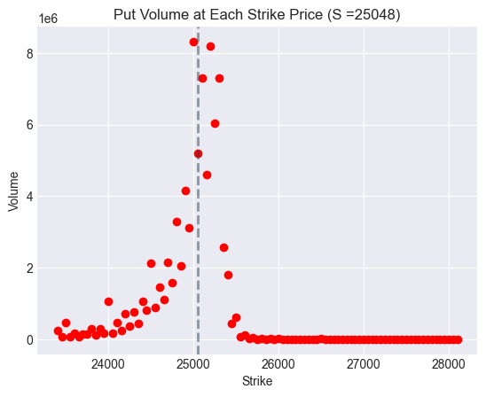
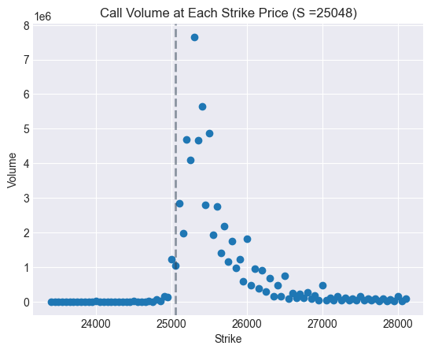

Introduction
Options pricing lies at the heart of modern financial derivatives trading. This project implements the Black-Scholes model for European options and calculates implied volatility using live market data from NSE India's Nifty 50 options.
The Black-Scholes Model
The Black-Scholes model, developed by Fischer Black, Myron Scholes, and Robert Merton, revolutionized options pricing by providing a mathematical framework to calculate the fair value of European options. The model assumes markets are efficient, volatility is constant, and returns follow a log-normal distribution.
Core Components
The model calculates option prices using five key inputs: current stock price, strike price, time to expiration, risk-free interest rate, and volatility. The implementation uses the cumulative distribution function of the standard normal distribution to determine the probability-weighted payoffs.
d₂ = d₁ - σ√T
Call Price = S·N(d₁) - K·e⁻ʳᵀ·N(d₂)
Put Price = K·e⁻ʳᵀ·N(-d₂) - S·N(-d₁)
Where S is the current stock price, K is the strike price, r is the risk-free rate, σ is volatility, T is time to expiration, and N() represents the cumulative standard normal distribution function.
Calculating Implied Volatility
Unlike forward pricing calculations, implied volatility must be derived through iterative methods. This project implements a bisection algorithm that reverse-engineers the Black-Scholes formula, searching for the volatility value that makes the theoretical price match the observed market price.
The Volatility Smile
The volatility smile contradicts Black-Scholes' constant volatility assumption. Our analysis reveals several market dynamics:
Fear Premium in Puts
Elevated implied volatility for out-of-the-money puts signals investor anxiety. When fear dominates, market participants pay premium prices for downside protection, driving put implied volatility above call volatility at equivalent distances from spot price.
Asymmetric Risk Perception
The skew pattern indicates bearish positioning. Investors prioritize protection over speculation—put demand significantly exceeds call demand. This asymmetry typically emerges during market corrections or heightened uncertainty.
Deep ITM Anomalies
Interestingly, deep in-the-money puts exhibit elevated volatility rather than converging toward zero as theory suggests. This anomaly likely stems from illiquidity and wide bid-ask spreads rather than genuine pricing signals.

Volume Distribution Patterns
Put Volume Concentration
Volume clusters near at-the-money strikes where hedging activity concentrates. Deep ITM puts (strikes above 26,000) show minimal volume—buying a put at 28,000 when spot is 25,048 guarantees intrinsic value loss if assigned. Far OTM puts also see limited activity as they represent tail-risk scenarios with low probability.

Call Volume Analysis
Call volumes follow a t-distribution pattern, peaking near ATM strikes. However, absolute call volume remains substantially below put volume, reinforcing the defensive market posture. The market shows greater interest in limiting losses than capturing gains.
Key Insights
- Black-Scholes provides elegant pricing mechanics, but markets violate its core assumptions
- Implied volatility surfaces reveal sentiment invisible in price data alone
- Put-call volume disparity signals defensive positioning and bearish bias
- Liquidity concentrates at ATM strikes, creating tighter spreads and better execution
- Numerical methods like bisection successfully extract volatility from market prices
This analysis demonstrates how theoretical models intersect with market reality, revealing the gap between academic assumptions and trader behavior in India's equity derivatives market.